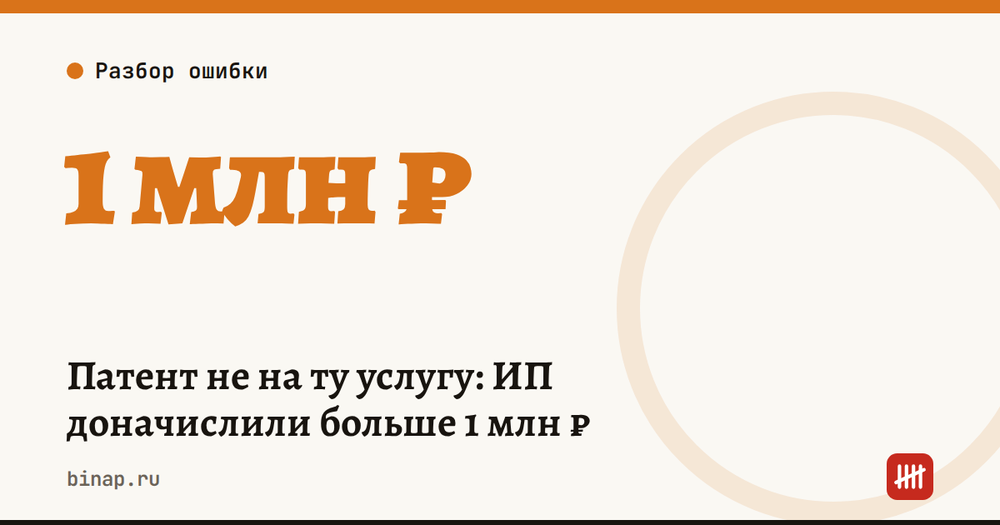

Патент не на ту услугу: ИП доначислили больше 1 млн ₽

Патент покрывает только тот вид деятельности, который в нём записан. Всё остальное налоговая считает по другому режиму — обычно по УСН, если вы её совмещаете с патентом.
Коротко
- Патент действует только на вид деятельности, указанный в нём, а не на «похожие» услуги.
- Доход сверх патента налоговая переносит на УСН (или на ОСНО, если УСН нет) и доначисляет налог со штрафом.
- В амурском случае ИП с патентом на грузоперевозки вывозил жидкие отходы — доначисления и штраф вместе больше 1,4 млн ₽.
- Защита простая: сверить услуги с формулировкой патента и вести отдельный учёт по работам вне патента.
Сроки, изменения и разборы для ИП и самозанятых — каждое утро в Telegram и MAX. Подпишитесь, чтобы не пропустить.
Что случилось. По данным Клерка со ссылкой на УФНС по Амурской области: - ИП купил патент на «автотранспортные услуги по перевозке грузов», а на деле вывозил жидкие бытовые отходы на ассенизаторской машине; - налоговая решила, что это другой вид деятельности: грузоперевозки — ОКВЭД 49.41, сбор и обработка сточных вод — группа 37; - весь доход за 2025 год перенесли на УСН: доначислили больше 1 млн ₽ налогов и больше 400 тыс. ₽ штрафа.
Это не единичный случай. Амурское УФНС ещё в 2023 году называло несовпадение фактической деятельности с патентом одним из главных нарушений при совмещении ПСН и УСН. Доход, который не подпадает под патент, включают в базу по УСН.
Что сделать сейчас: 1. Выпишите всё, за что вам платят клиенты, и сверьте с формулировкой вида деятельности в каждом патенте — не с названием «похожего» ОКВЭД. 2. Сомневаетесь, подходит ли услуга под патент, — отправьте письменный запрос в инспекцию до того, как придёт требование. 3. Для работы вне патента ведите отдельный учёт доходов и платите авансы по УСН. 4. Следите за лимитом: в 2026 году доходы по всем патентам (вместе с УСН) не должны превышать 20 млн ₽, иначе право на ПСН теряется с начала срока патента.
Чек-лист сверки
| Что проверить | Где смотреть |
|---|---|
| Формулировка вида деятельности | сам патент и региональный закон о ПСН |
| Что вы фактически делаете | договоры, счета, акты, описание услуг на сайте |
| Совпадает ли техника и место работы | патент: транспорт, площадь, адрес |
| Есть ли доходы вне патента | банковская выписка, кассовые чеки |
| Платите ли УСН с доходов вне патента | книга учёта, уведомления по ЕНП |
Если хотя бы одна строка вызывает сомнение — это повод для письменного запроса в инспекцию. Ответ сохраните: он пригодится, если вопросы возникнут позже.
Как правильно уйти с патента на упрощёнку — в статье переход с патента на УСН в 2027 году. Что делать, если право на патент уже утрачено, — утрата права на ПСН: уведомление за 10 дней. О новых лимитах — лимит патента снижается.
Частые вопросы
Что будет, если деятельность не совпадает с патентом? Доход по ней пересчитают по УСН или ОСНО и доначислят налог со штрафом — в амурском случае вместе больше 1,4 млн ₽.
Как не спорить с налоговой задним числом? Задать вопрос письменно заранее и хранить ответ инспекции.
Можно ли купить второй патент на недостающий вид деятельности? Да, у ИП может быть несколько патентов на разные виды деятельности. Но патент действует только с даты, указанной в нём, и не покрывает доход прошлых периодов.
Если у меня нет УСН, а доход вне патента был? Тогда его посчитают по общей системе налогообложения — это обычно дороже, чем УСН.